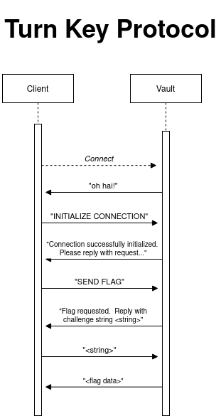

Turn-Key Protocol
In order to secure the First Flag ever produced by Mom and Pop, we have devised a method to
store the flag in three vaults so that only by "turning" the key on all three vaults at the same
time can you get the flag. To "turn the key" you need to execute the turn-key protocol (detailed
below). The vaults encrypt the flag using AES and each vault will reply with 1/3 of the key
needed to decrypt the flag.
The vaults are located at:
Vault 1: vault1.momandpopsflags.ca
Vault 2: vault2.momandpopsflags.ca
Vault 3: vault3.momandpopsflags.ca
The vaults rotate the encryption every few seconds.
To turn the key on a vault you have to successfully execute the protocol set out below with a certain time frame:

1. Client connects to the vault
2. Vault replies: "oh hai!"
3. Client sends: "INITIALIZE CONNECTION"
4. Vault replies: "Connection successfully initialized. Please reply with request..."
5. Client replies: "SEND FLAG"
6. Vault replies: "Flag requested. Reply with challenge string <string>"
7. Client replies: "<string>"
8. Vault replies with encrypted flag data
You will know that you executed the protocol successfully on all three vaults if the ciphertext and IV of all the messages are the same. Concatenate all partial keys together in the right order to form the full decryption key. Here is an example of the return message of a successful key turn on the first vault:
Success! Your request took 322ms!
The flag encryption rotates on all 3 vaults every 2400ms.
AES-256 (CBC PKCS5)
Partial key (1/3): 0x0B255E2D00AFF99C6B5E4
IV: 0x9DBEBF97C56B789396457C122E929970
Ciphertext: 0xEE0E88528EF1539C72A6820EC639F274
If you are too slow to execute the protocol you will receive the following message:
Sorry, too slow! Your request took 828ms! The protocol must be completed in under 360ms!
The flag encryption rotates on all 3 vaults every 2400ms.
{% endblock %}